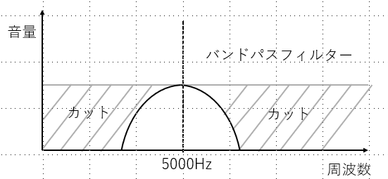

フィルター
フィルターとは、特定の周波数成分をカットすることで音色を変化させる機能のことを言います。
カットする周波数帯域によってフィルターの種類が異なります。
フィルター種別
フィルターには、主に三種類あります。
① ローパスフィルター
② ハイパスフィルター
③ バンドパスフィルター
ローパスフィルターは、名前の通り、low(低い)をpass(通す)するフィルターです。
つまり、高域周波成分をカットするフィルターがローパスフィルターです。
ハイパスフィルターも同様に、high(高い)をpass(通す)するフィルターである。
つまり、低域周波成分をカットするフィルターがハイパスフィルターです。
バンドパスフィルターは、特定の周波数帯域のみが通過可能なフィルターです。
ここで、「カットオフ周波数」というものが重要になります。
カットオフ周波数
これはどの周波数帯域をカットするかを決めるためのパラメータです。
つまり、ローパスフィルターに、カットオフ周波数5000Hzを適応した場合は、5000Hzより高い周波成分はカットされます。
逆に、ハイパスフィルターに、適応した場合は、5000Hz
より低い周波成分はカットされます。
バンドパスフィルターの場合は、5000Hz
周辺の周波成分のみを通します。

フィルター体験へ